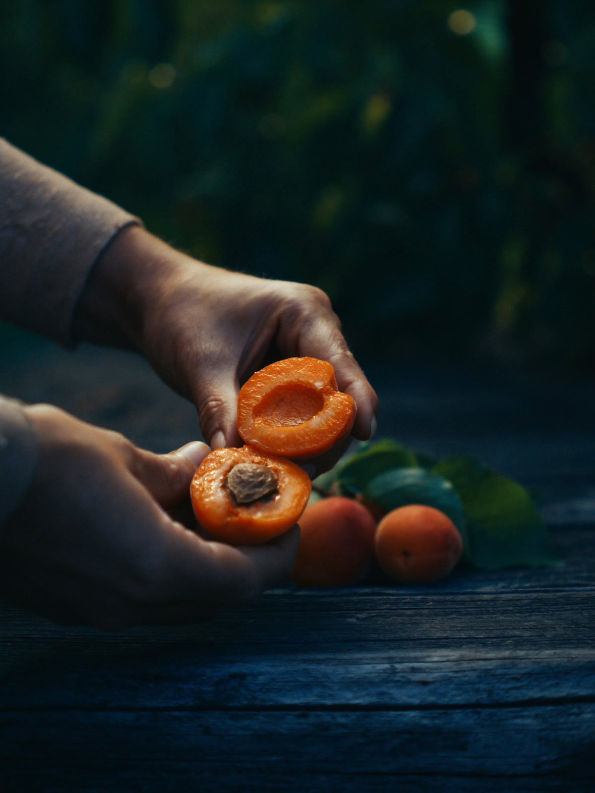
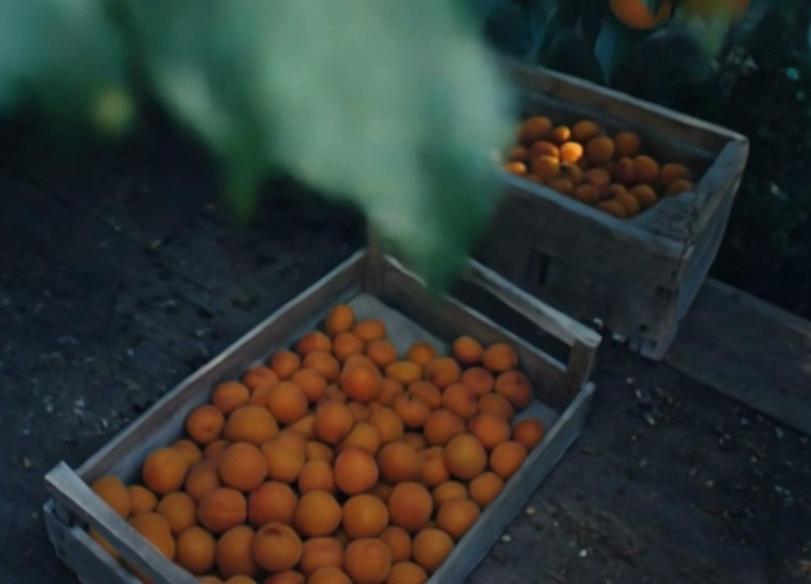
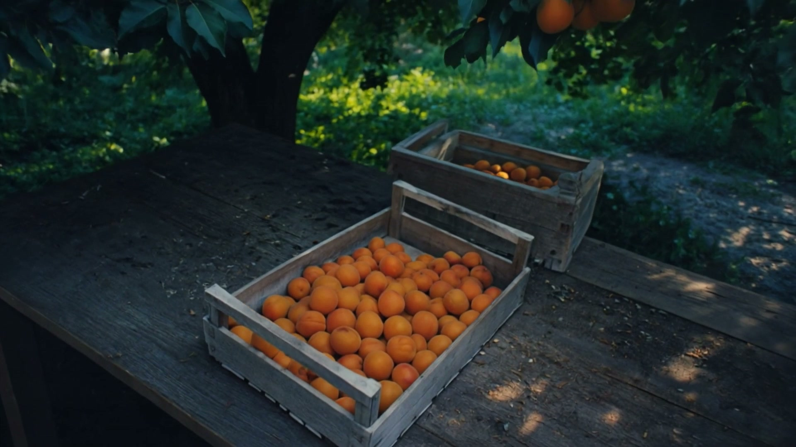

01Vitis vinifera
Виноград
кишмиш белый · кишмиш чёрный · кишмиш розовый · Дамские пальчики · Мускат и ещё 4
- Выбрать
- Гроздь крепкая, веточка зелёная, ягоды не осыпаются.
- Хранить
- Немытый в холодильнике до недели.
- Подать
- С сыром и орехами к столу.
Михайловск · ЖР «Гармония»
Выбираем, как для своих.
Спелое, а не просто красивое.
У нас всегда всё есть. Как на южном рынке, только рядом с домом.
Михайловск · ЖР «Гармония»
У нас всегда всё есть. Выбираем, как для своих.
01 Витрина
То, за чем к нам возвращаются. Каждый плод выбираем сами, а какие сорта сегодня на прилавке, подскажем на месте.

01Prunus armeniaca
Краснощёкий · Шалах · Ананасный
Учёные зовут абрикос «армянской сливой». Выбирайте ровно-оранжевые, упругие и с ароматом.
02 Сезон
Самое вкусное всегда то, что сейчас в сезоне. Этот список меняется сам каждый месяц, а что уже лежит на прилавке, спросите в магазине.
В сентябре в сезоне
кишмиш белый · кишмиш чёрный · кишмиш розовый · Дамские пальчики · Мускат и ещё 4
Конференция · Вильямс · Санта-Мария · Форель · Абате Фетель
Голден · Гренни Смит · Симиренко · Гала · Фуджи и ещё 2
тёмный · зелёный
мускатная · баттернат · Хоккайдо
Список общий, по сезону для юга России.
Нажмите «В список», чтобы добавить плод в список покупок.
03 Весь прилавок
Что растёт в России и что привозят из других стран, по месяцам. Ищите по названию, сорту или стране, а что лежит сегодня, подскажем на месте.
Ничего не нашлось. Спросите в магазине: у нас всегда всё есть.
Сорта: что обычно бывает на прилавках юга России. Страны: главные поставщики в Россию по данным Россельхознадзора и отраслевых обзоров за 2025–2026 годы. «Россия» значит, что плод свой, с полей или из теплиц, сезон указан для юга.
04 Для своих
В «Гармонии» нас знают в лицо. Подскажем, что сегодня слаще, поможем выбрать к столу и не положим в пакет то, что не взяли бы себе.

05 Честный ящик
Знакомо: берёшь ящик, а под верхним рядом мелочь и мятые бока. Здесь нижний ряд такой же, как верхний. Загляните сами.
Нижний ряд как верхний. Для своих иначе нельзя.
Бывает, что да. Зато помидор пахнет помидором, а яблоко хрустит.
Конечно. Выбирайте руками или доверьтесь нам: подскажем, что сегодня лучше.
Спросите в магазине, выберем при вас. А пока загляните в блок «Сезон»: там у каждого плода есть подсказка.
Пока нет. Приходите в магазин: ЖР «Гармония», ул. Михаила Калашникова, 43.
Каждый день с 8:00 до 21:00, без выходных.

07 Приходите